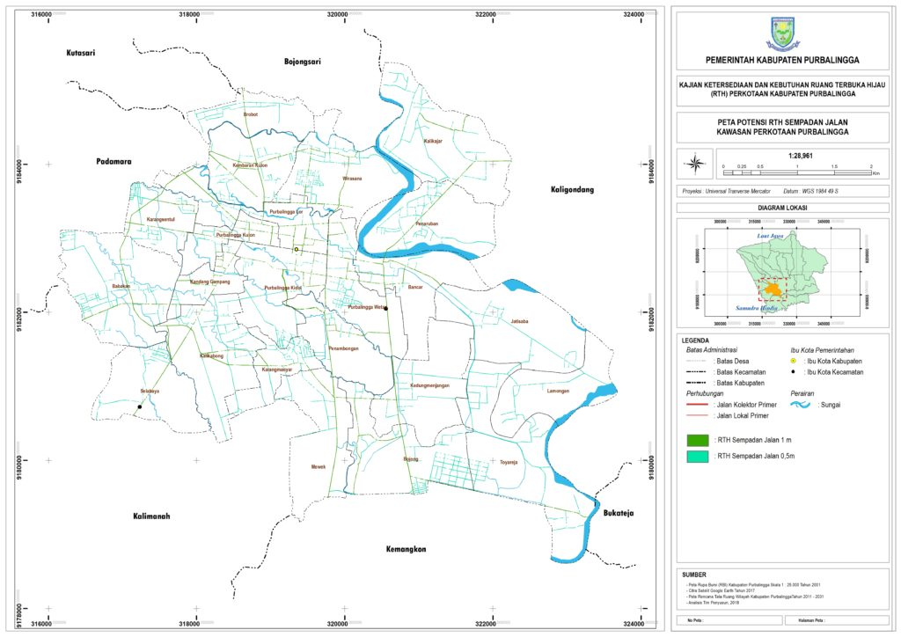

RTH Sempadan Jalan
Jaringan jalan yang ada di Perkotaan Purbalingga meliputi jalan kolektor primer (Jl. Mayjen Sungkono, Jl. A Yani, Jl. Jendral Sudirman, Jl. Letnan S Parman, Jl. AW Sumarmo, Jl. DI Panjaitan, Jl. Pujowiyoto), jalan lokal serta jalan lingkungan. Berdasarkan hasil pengamatan di lapangan, bahwa lebar jalur hijau yang ada di Perkotaan Purbalingga mempunyai lebar 1 meter untuk kondisi jalan kolektor dan 0,5 meter untuk jalan lokal, sehingga potensi luas jalur hijau jalan yang ada di Perkotaan Purbalingga berdasarkan identifikasi tahun 2018 adalah sebagai berikut:
Jalur hijau di jalan kolektor primer seluas 3,167 ha
Jalur hijau di jalan lokal seluas 16,753 ha
Dari hasil perhitungan di atas, maka potensi
keseluruhan jalur hijau jalan yang ada di Perkotaan Purbalingga tahun 2018 adalah seluas 19,921 ha. Potensi luas jalur hijau jalan ini masih dapat dikembangkan dengan penanaman pohon sebagai pengarah, peneduh maupun fungsi estetika terutama pada kondisi jalan lokal yang masih mempunyai pontensi besar untuk dilakukan penanaman pohon.

Peta RTH Sempadan Jalan Perkotaan Purbalingga, 2018
RTH Sempadan Sungai
Dari aturan sempadan sungai yang ada, maka dapat diasumsikan untuk sempadan sungai di Perkotaan Purbalingga adalah sebagai berikut :
Sungai Klawing mempunyai garis sempadan sungai 100 meter dihitung dari tepi sungai
anak-anak sungai klawing yang berada di dalam perkotaan Purbalingga mempunyai garis sempadan sungai 15 meter.
Sehingga dapat diketahui luas RTH sempadan sungai non permukiman berdasarkan analisa spasial tahun 2018 adalah seluas
509,28 ha. Sempadan sungai mempunyai fungsi utama ekologis antara lain:
Sebagai pelindung lahan dari abrasi arus sungai
Produsen oksigen
Penyerap air hujan
Penyedia habitat satwa
Penahan angin

Peta RTH Sempadan Sungai Perkotaan Purbalingga, 2018